Par Motor › Historia del motor › Lamborghini
Historia del motorLamborghini: la historia completa

Este es el Lamborghini Countach. Durante años, el póster que colgaba en la habitación de medio mundo.
Lo curioso es que la marca que lo creó empezó fabricando tractores.
Y, según la leyenda, todo arrancó por una discusión con Enzo Ferrari.
Por el camino habrá quiebras, cambios de dueño y algunos de los coches más locos jamás fabricados.
Esta es la historia completa de Lamborghini.
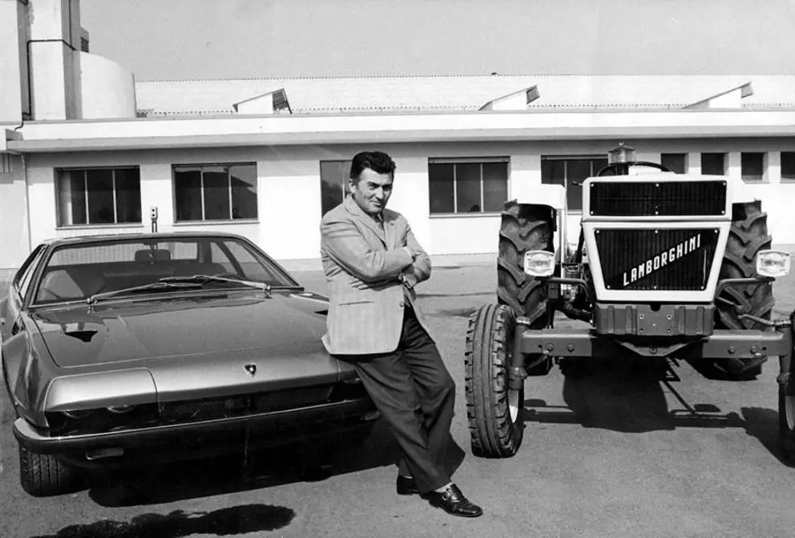
Ferruccio Lamborghini (1916-1993)
Ferruccio Lamborghini nace en 1916 en Renazzo, un pueblo cerca de Ferrara, en Italia. Es hijo de agricultores.
Pero a él no le interesa el campo: le fascinan los motores y las máquinas.
Durante la Segunda Guerra Mundial sirve como mecánico en la isla de Rodas. Allí aprende a arreglar casi cualquier cosa con muy pocas piezas.
Un detalle: Ferruccio era del signo Tauro. Por eso, años después, su marca llevará un toro en el escudo.
Este toro.
Tractores con restos militares
Al volver de la guerra, Italia necesita tractores para trabajar el campo. Y Ferruccio tiene una idea: construirlos con los restos de vehículos militares.
En 1948 funda Lamborghini Trattori. El negocio funciona tan bien que pronto se convierte en uno de los grandes fabricantes de tractores del país.
Después abre otra empresa de calefacciones y aire acondicionado. Y se hace muy rico.
Con el dinero llegan los coches de lujo. Tiene deportivos de varias marcas, entre ellos varios Ferrari.
El embrague
Y aquí viene la famosa historia. Sus Ferrari le dan problemas con el embrague.
Según contaba el propio Ferruccio, al desmontarlo descubrió que la pieza era muy parecida a la de sus tractores… pero mucho más cara.
Así que va a quejarse a Enzo Ferrari.
Y la leyenda dice que Enzo le respondió algo así como: «Tú dedícate a los tractores, que de coches ya me encargo yo». Nunca se ha podido comprobar que lo dijera con esas palabras.
Lo que sí sabemos es que Ferruccio decidió hacer su propio gran turismo. Y también que vio un buen negocio: cobrar caro por coches mejor hechos.
1963 · Sant'agata bolognese
En 1963 funda Automobili Ferruccio Lamborghini, en Sant'Agata Bolognese, a pocos kilómetros de Maranello, la casa de Ferrari.
Para el motor contrata a Giotto Bizzarrini, un ingeniero que había trabajado en Ferrari. Le encarga un V12.
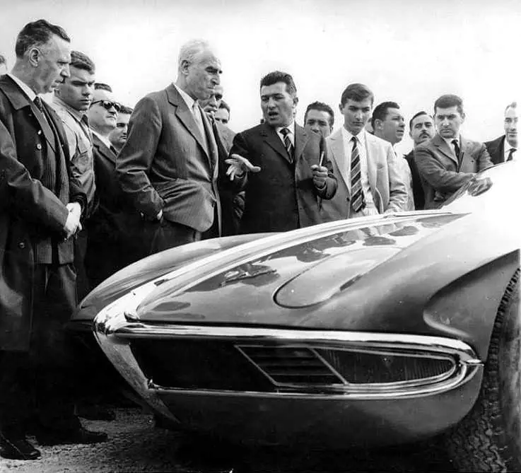
Ese mismo año presenta un prototipo en el Salón de Turín: el 350 GTV.
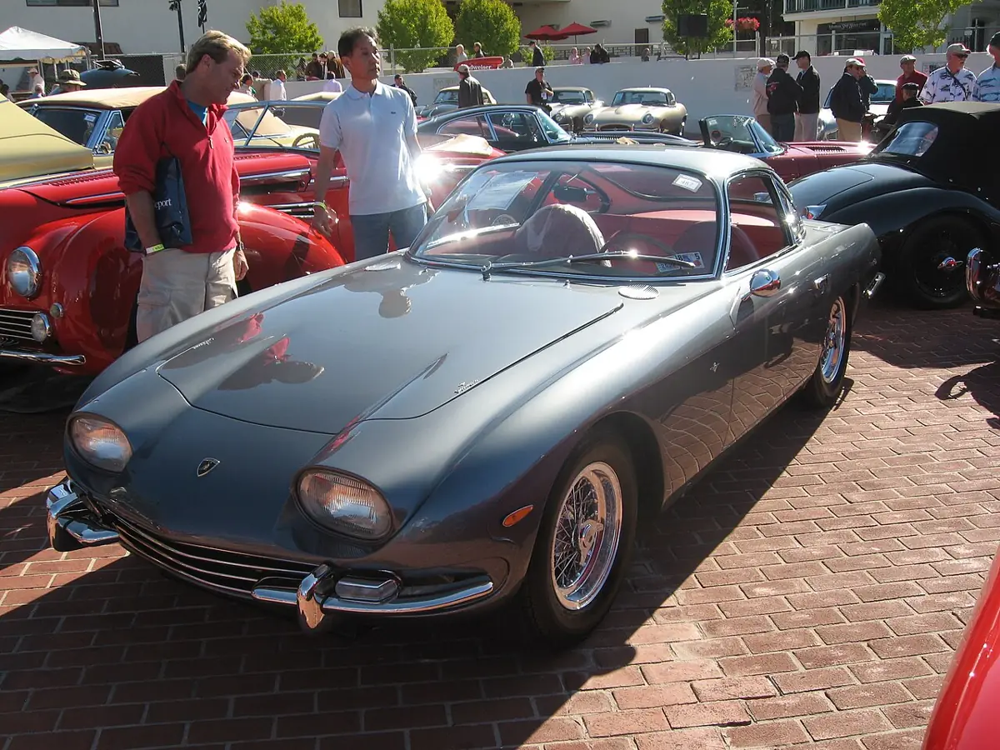
Y en 1964 llega su primer coche de serie, el 350 GT. Elegante, cómodo y con un V12. Exactamente lo que Ferruccio quería.
Pero en la fábrica hay un equipo de ingenieros jovencísimos, con veintitantos años, que quieren algo mucho más radical.
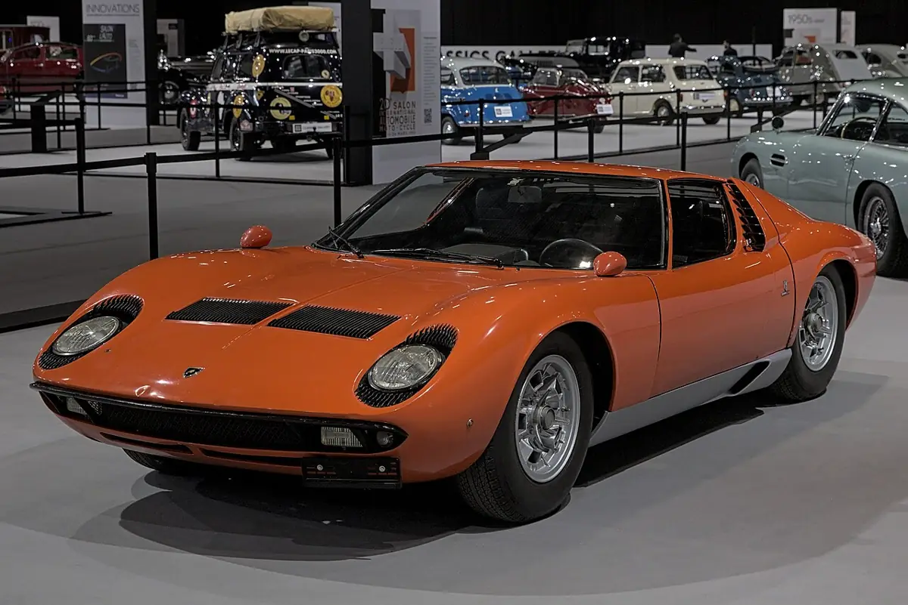
Lamborghini Miura P400 S
Lo diseñan casi a escondidas, en su tiempo libre. Y en 1966, en el Salón de Ginebra, presentan el Miura.
Su gran novedad: un motor V12 colocado detrás de los asientos, en posición transversal. Una configuración de coche de carreras en un coche de calle.
La carrocería la dibuja Marcello Gandini, del estudio Bertone, con poco más de veinte años.
Para muchos, este es el primer superdeportivo de la historia moderna.
El nombre viene de Miura, una famosa ganadería de toros de lidia. Desde entonces, muchos Lamborghini llevan nombres relacionados con toros.
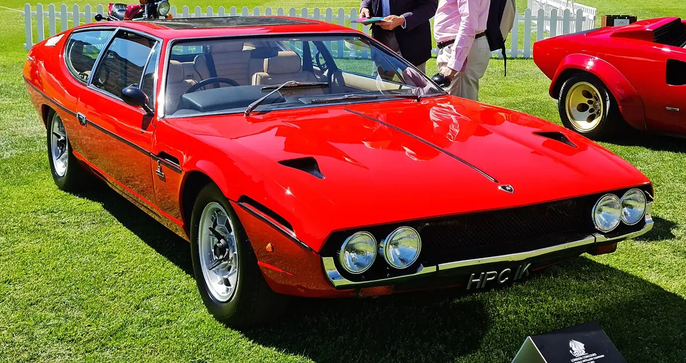
En 1968 llega el Espada, un gran turismo de cuatro plazas que se convierte en uno de sus coches más vendidos de la época.
1971 · Prototipo lp500
Y en 1971, en Ginebra, Lamborghini enseña un prototipo que parece una nave espacial.
Es el Countach. Otra vez de Marcello Gandini: todo ángulos y puertas que se abren hacia arriba.
Su nombre es una exclamación del dialecto del Piamonte. Algo así como un «¡madre mía!» al ver algo increíble.
En los años ochenta se convierte en el coche de los pósters. Muchos niños nunca vieron uno en persona… pero lo tenían en la pared.
Pero mientras tanto, las cosas van mal. Llega la crisis del petróleo y nadie quiere coches que gastan muchísimo.
A principios de los setenta, Ferruccio vende el negocio de tractores y, poco a poco, también la marca de coches.
Se retira a una finca en Umbría, junto al lago Trasimeno, donde se dedica al vino. Muere en 1993.
1978 · Quiebra
Sin su fundador, Lamborghini va de crisis en crisis. En 1978 entra en quiebra.
En los años siguientes cambia varias veces de dueño. Unos empresarios suizos, la familia Mimran, Chrysler, un grupo indonesio…
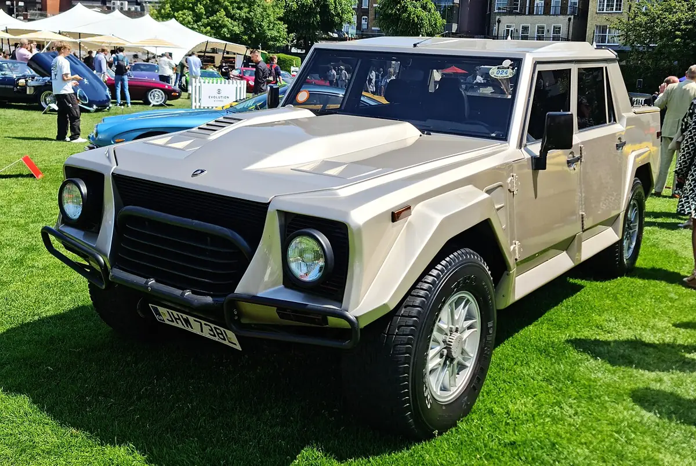
Por el camino salen cosas tan raras como el LM002, un todoterreno gigante con el motor V12 del Countach. Lo apodaron el «Rambo Lambo».
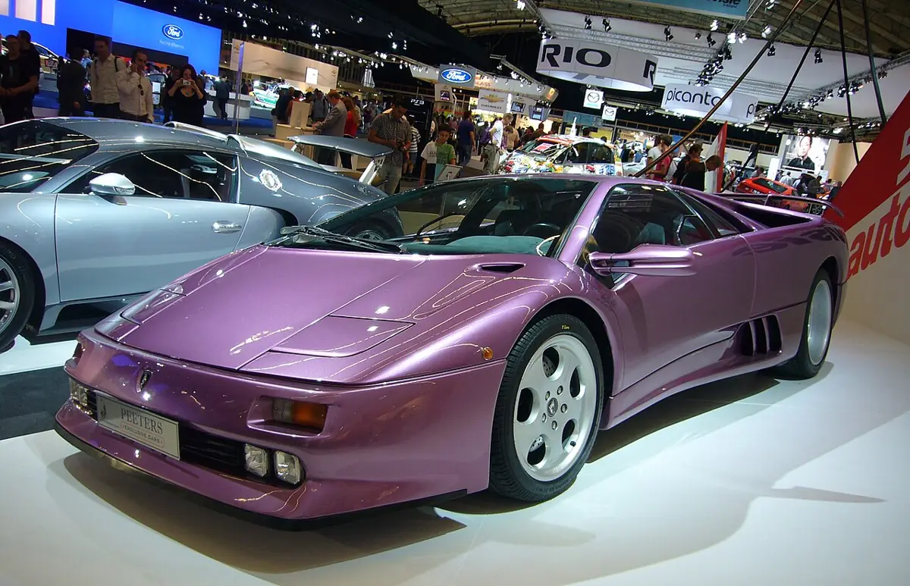
Y en 1990, ya con Chrysler, llega el Diablo: el sucesor del Countach. Uno de los primeros coches de serie capaces de superar los 320 kilómetros por hora.
Pero los problemas económicos siguen. Lamborghini necesita a alguien con mucho dinero y mucha paciencia.
1998 · Audi · grupo volkswagen
Y en 1998 llega Audi, del grupo Volkswagen. Y esta vez, sí, la marca se estabiliza.
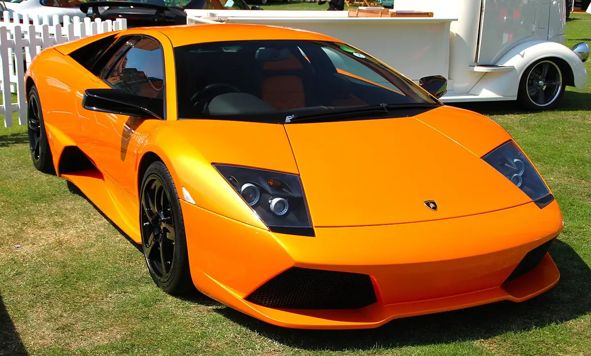
En 2001 sale el Murciélago, que lleva el nombre de un toro de lidia muy famoso.
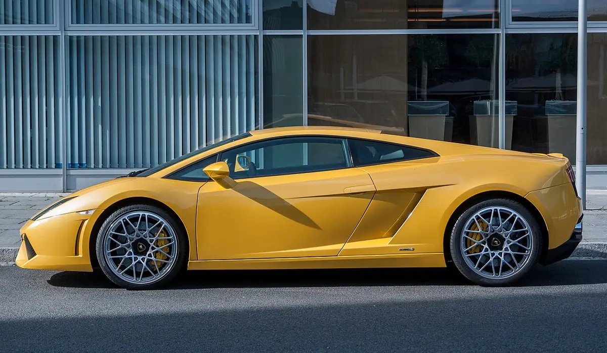
Y en 2003 el Gallardo, un Lamborghini más pequeño, con motor V10. Se convierte en el más vendido de su historia hasta ese momento.
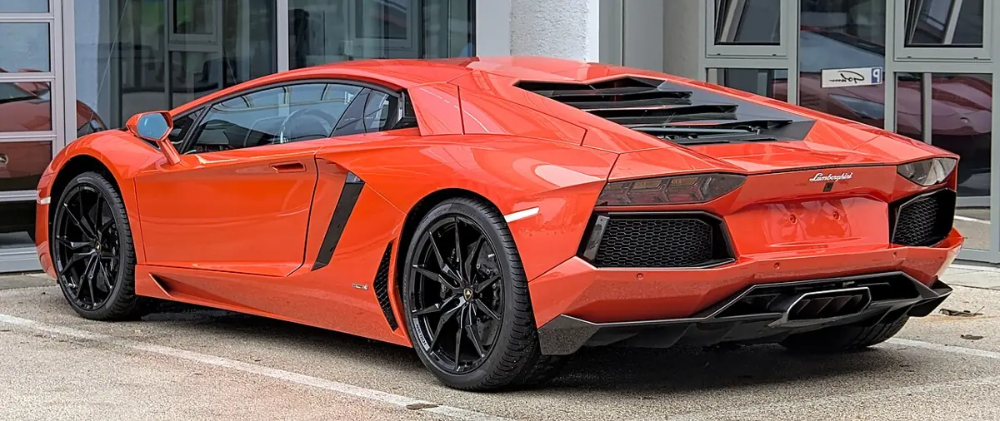
En 2011 llega el Aventador: el nuevo gran V12 de la marca.
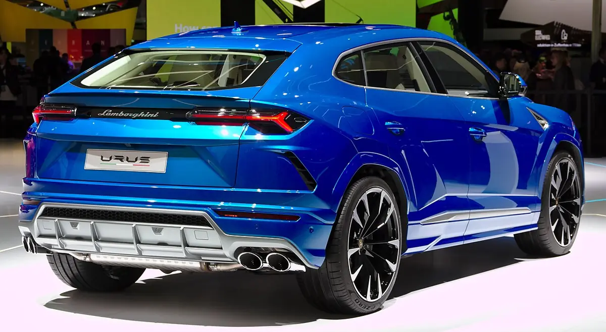
Y en 2018, el más polémico: el Urus, un todoterreno. Los puristas protestan… y se convierte en el Lamborghini más vendido.
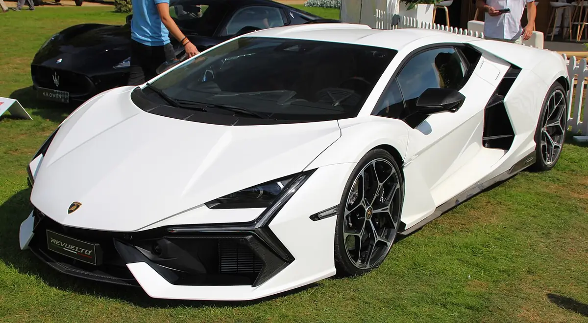
Hoy, el buque insignia es el Revuelto: un V12 híbrido enchufable. El primero de la marca.
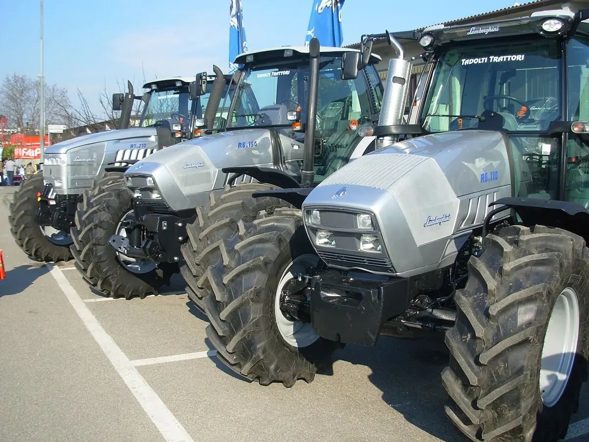
Por cierto: los tractores Lamborghini siguen fabricándose. Pero hoy son de otra empresa distinta a la de los coches.
Una venganza… que salió bien
Así que, sea verdad o no la discusión con Enzo Ferrari, de aquel enfado salió una de las marcas más espectaculares del mundo.
¿El Miura o el Countach?
Más curiosidades de Lamborghini
¿Cuánto vale hoy un Lamborghini?
Consulta el precio justo de segunda mano de cualquier modelo, año por año, con el tasador gratis de Par Motor.
Ver precios por modelo →